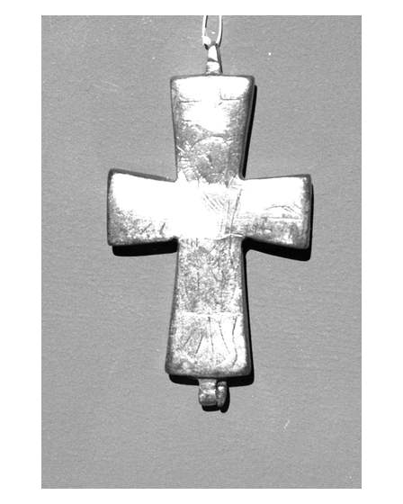

Catalog › CE-0576 · COM2026-38423092
Cruce pectorală-encolpion de la Opočnice, Muzeul Național Praga H2.1963
sfârșitul sec. X–XI (967–1100) · Opočnice, Cehia · Muzeul Național, Praga, inv. H2.1963 / a-b
double-sided reliquary cross (enkolpion), altul; sfârșitul c. X–XI (967–1100); found at Opočnice, Cehia; kept at Muzeul Național, Praga.


Identificare
- Categorie
- Encolpion bivalv (relicvar)
- Material
- Altul
Iconografie
- Descriere avers
- Cruce de aliaj, cu incizii pe față (fotografie din expoziția „Benedictines”, Galeria Națională Praga).
Datare și atribuire
- Datare
- sfârșitul sec. X–XI (967–1100)
Descoperire
- Localitate
- Opočnice
- Țară
- Cehia
- Coordonate
- 50.1740° N, 15.2578° E
- Precizia locului
- Doar localitatea
Păstrare și referințe
- Colecție
- Muzeul Național, Praga
- Nr. inventar
- H2.1963 / a-b
- Bibliografie
- Fotografie: Zde, Wikimedia Commons, licență CC BY-SA 4.0, https://commons.wikimedia.org/?curid=38423092 (accesat 17.10.2026).
- Figura
- Wikimedia Commons, pagina 38423092
- Observații
- Descrierea de pe Commons: Boemia, Constantinopol sau Anatolia; aliaj de cupru, plumb și staniu. Altă fotografie: pagina 38959573 (față neprecizată, nu a fost luată). Coordonate: ale localității (aproximative), nu date în sursă.
Citare: Corpus Encolpiorum, CE-0576, Cruce pectorală-encolpion de la Opočnice, Muzeul Național Praga H2.1963, https://vitaliejosanu1979-ux.github.io/primul-meu-proiect/piese/COM2026-38423092/ (accesat 2026-10-17).